Guiso de lentejas
Bizcochitos de grasa
Empanadas
Matambre arrollado
Salsa criolla
Polenta
Recetas populares
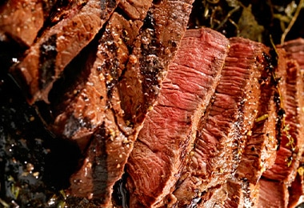
Asado
El asado es el plato insignia de argentina, proveniente de la llanura pampeana donde más que una comida típica, hacer asados se convierte en todo un ritual. El asado incluye diferentes tipos de cortes de carne de vaca o de cerdo, acompañados de morcillas, chorizos, costillitas, etc.
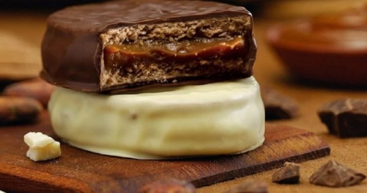
Alfajores
El alfajor es un dulce tradicional de la gastronomía argentina con gran fama internacional. Son dos galletas unidas por un relleno de frutas, chocolate o algún tipo de mousse, pero sin duda los más populares son los que están rellenos con dulce de leche.
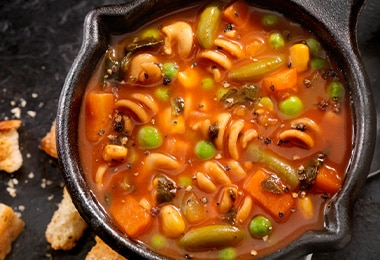
Locro
El locro es una especie de sopa espesa y abundante hecha de maíz, frijoles, papas y calabaza con algún tipo de carne y condimentada con comino, laurel, ajo, perejil y otras hierbas, aunque la receta puede cambiar según la tradición de cada provincia argentina. Es uno de los platos nacionales por excelencia siendo la preparación obligada en invierno y se come tradicionalmente el 25 de mayo y el 9 de julio que son fechas patrias en Argentina.
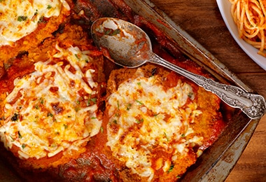
Milanesa
La carne es un elemento fundamental en la gastronomía argentina y la milanesa es un ejemplo de esto. La milanesa es una rebanada delgada de carne rebozada en pan rallado y frita quedando dorada y crujiente por fuera y tierna por dentro.
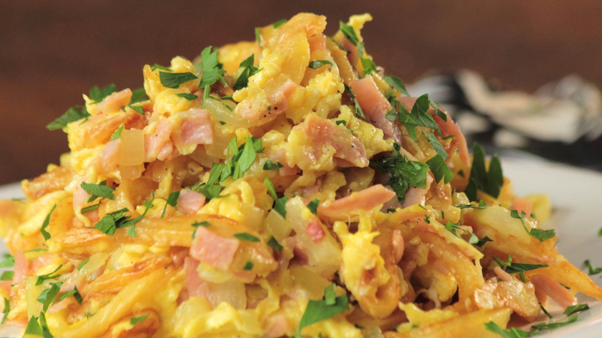
Revuelto de Gramajo
El revuelto Gramajo es un plato típico de Argentina y de Uruguay. Si bien tiene sus variantes a través de los años, el Revuelto Gramajo está hecho con tres ingredientes solamente, papa, huevo y jamón. Las papas deben ser cortadas finamente para ser estilo papas pay, el jamón cortado en cuadrados y el huevo revuelto.
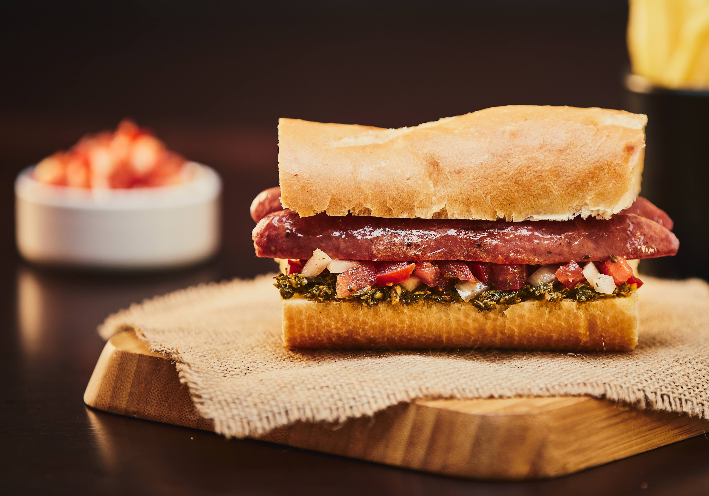
Choripan
Este es otro clásico argentino y como su nombre bien lo indica, está compuesto por un tipo pan baguette corto con un chorizo asado a la parrilla y aderezado con chimichurri, la salsa infaltable en la mesa argentina la cual se elabora con perejil, ajo, orégano, aceite de oliva, vinagre y unas cuantas hojuelas de chile seco.
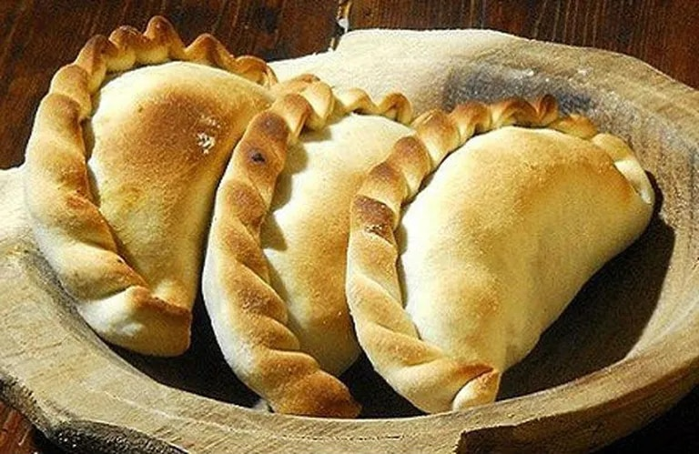
Empanadas
Este alimento no se originó en Argentina, pero la forma de prepararlas y las variaciones en sus ingredientes las han vuelto muy reconocidas y aclamadas en toda la región convirtiéndose en un plato típico de este país. Las empanadas son trozos de masa con diferentes tipos de rellenos las cuales se clasifican dependiendo la región donde se prepare.
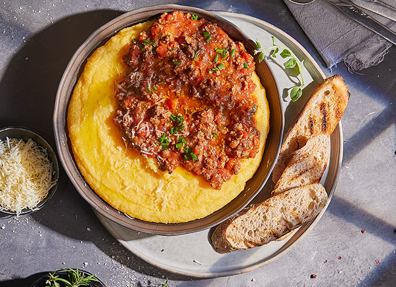
Polenta
Otra de las comidas italianas muy consumidas en Argentina es la polenta. La polenta es un plato muy rendidor y nutritivo que consiste en una mezcla de harina de maíz hervida cuya textura es muy similar al de un puré de papa con la que se pueden hacer una infinidad de preparaciones como la polenta frita, para crear bases, acompañamientos y hasta postres.
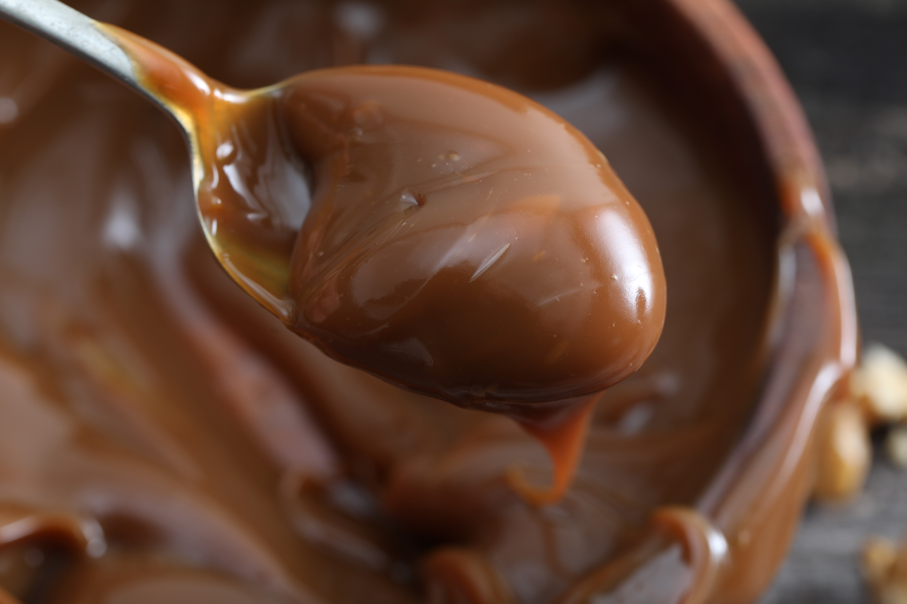
Dulce de leche
El dulce de leche es un producto lácteo, producido por la cocción de leche con azúcar y que generalmente se utiliza como cobertura de postres o para untar o jaspear. Es sin lugar a dudas el dulce más tradicional del país. Tiene una textura suave, cremosa y un aroma y sabor a caramelo.
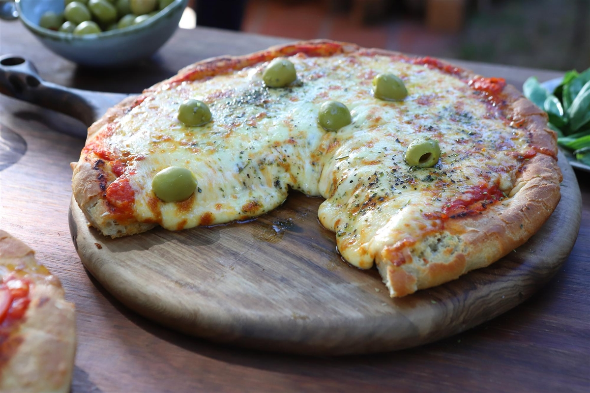
Pizza Argentina
Claramente influenciada por la cocina italiana, pero con muchísimas variantes locales, la pizza argentina tiene una corteza gruesa, salsa de tomate, mucho queso y los más variados ingredientes encima. Puedes pedir pizzas de cebolla, de jamón, huevo y aceitunas, de pollo, palmitos, choclo, etc. Es uno de los platos más comunes durante las reuniones con amigos, tanto en las casas como en restaurantes y bares. A la pizza se la suele acompañar con una cerveza fría.
Destacadas
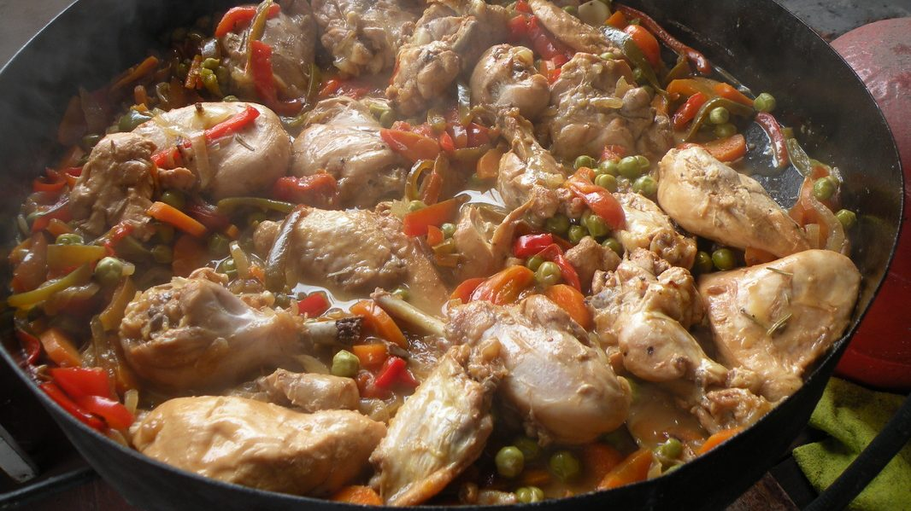
Pollo al disco
Es un plato que se prepara en una olla grande, parecida a un wok. Sus ingredientes principales son pollo, cebolla, zanahoria, maíz, arvejas, pimientos y vino blanco. También se añaden normalmente otro tipo de verduras y legumbres. No se sabe con certeza el origen de este plato, pero se cree que fue creado por los trabajadores rurales que utilizaban los discos de arado de la cosecha que ya no servían para cocinar esta comida económica y popular.
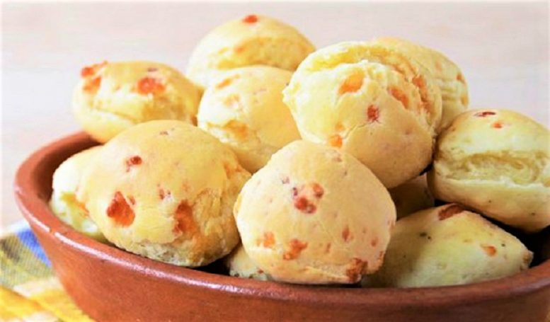
Chipá
Si hablamos de especialidades regionales, no podemos dejar de mencionar los famosos chipás de la provincia de Misiones. Se trata de unas bolas de queso, pan de mandioca, leche, manteca, huevo y sal. ¡Son ideales para acompañar el mate!. Actualmente se comen en todo el país e incluso en algunas ciudades del suroeste de Brasil.
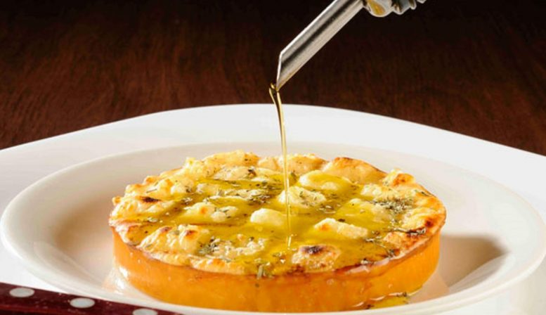
Provoleta
Para preparar un provoleta, se debe poner a la parrilla el queso provolone y dejarlo unos minutos para que tome una consistencia más blanda, y añadir algunos condimentos como orégano, ajo, chili y perejil. Luego, se sirve casi derretido y crujiente, ligeramente caramelizado en el exterior y ahumado en su interior. Para coronar el plato, los cocineros argentinos suelen agregar un poco de aceite de oliva y de chimichurri. ¡Un plato tan sencillo como exquisito!
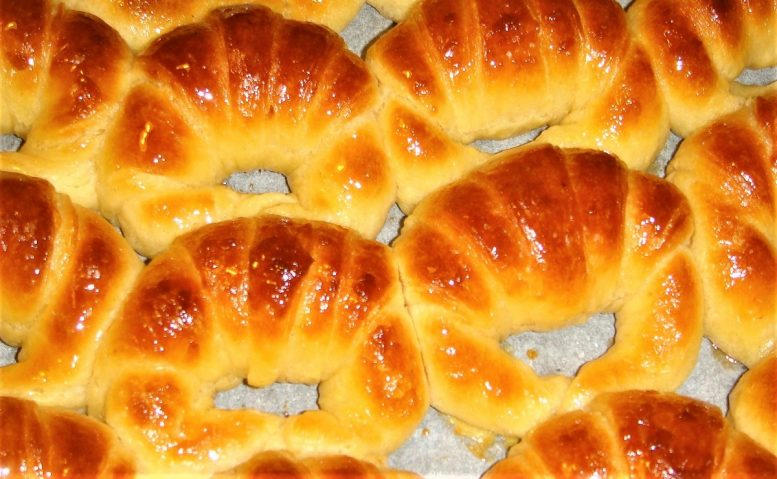
Medialunas
Muy similares a los croissants, las medialunas argentinas están hechas de un hojaldre mantecoso, pero se diferencian por ser más dulces y pequeñas que las francesas. Para los argentinos, es muy común pedir en un bar unas medialunas durante el desayuno junto al café, o a la hora de la merienda para acompañar el té o el mate.
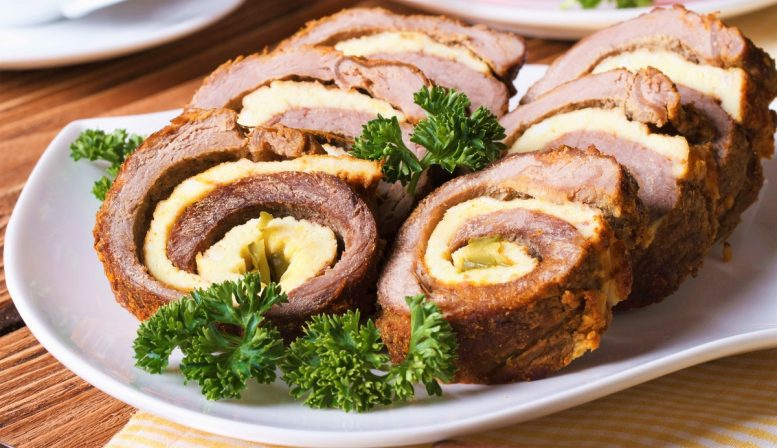
Matambre arrollado
El matambre es un corte de carne que se encuentra en el medio del cuero y el costillar de las vacas. Este plato se trata de rellenar la carne (cortada en finas rodajas) con verduras mixtas, huevos duros, aceitunas y pimientos. Finalmente, se sazona con cilantro, ajo y aceite de oliva, y cocina todo junto en una parrilla u horno.
Novedades
Bizcochitos de grasa
Los bizcochitos de grasa argentinos o bizcochitos entrerrianos son unas galletas saladas con forma circular de unos 4 cm de diámetro y con un grosor de aproximadamente 1,5 cm. Tienen la peculiaridad de que su superficie está decorada con unos pequeños agujeros. Para prepararlos, tan solo necesitamos harina de trigo, agua, levadura fresca, sal y grasa de vaca, esta última la responsable de su inigualable sabor.
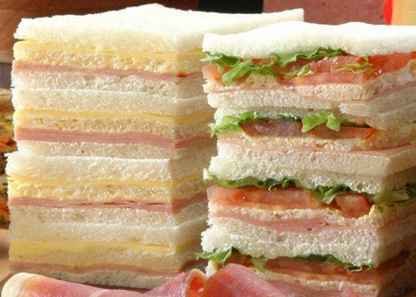
Sandwich de miga
Los sándwiches de pan de miga tan populares en Argentina y Uruguay usan un pan específico, el pan de miga, del que precisamente toman su nombre. Sin embargo, el origen de este sándwich se encuentra en Turín, Italia, donde comenzaron a prepararse como adaptación a los sándwiches ingleses con sabores e ingredientes mediterráneos. Con la llegada de inmigrantes italianos a Argentina, el sándwich de miga llega a ser parte del repertorio habitual de comidas en las celebraciones de este país.
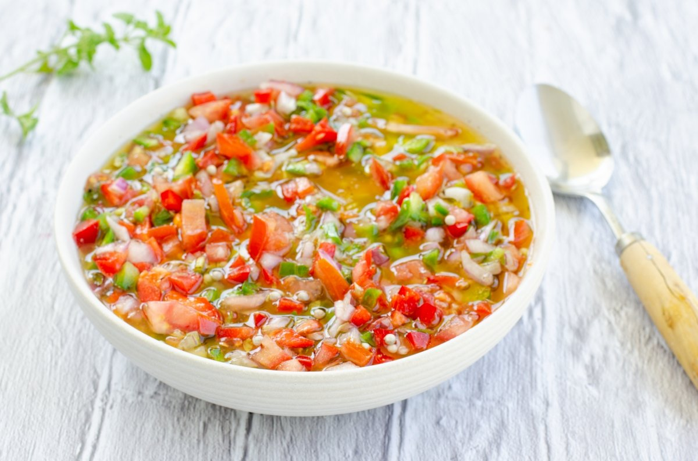
Salsa criolla
Salsa criolla es la denominación común para un preparado simple en forma de salsa o adobo culinario, ampliamente difundido en América Latina. Por su sencillez y economía de ingredientes podría encontrarse en otras culturas con distintas denominaciones y variantes.Consiste en diferentes ingredientes picados en brunoise, principalmente cebolla, morrón (rojo y/o verde) y tomate, adobados con un preparado de vinagre y algo de aceite. En ambos países es muy consumida junto con el chimichurri.

Chocotorta
La chocotorta es un postre originario de Argentina. Con el lanzamiento en 1975 por Bagley de una variedad de galletitas de chocolate, marca Chocolinas, en muchas poblaciones del sur de Santa Fe se comenzó a elaborar en los hogares esta torta, conocida como «el postre de las chocolinas».
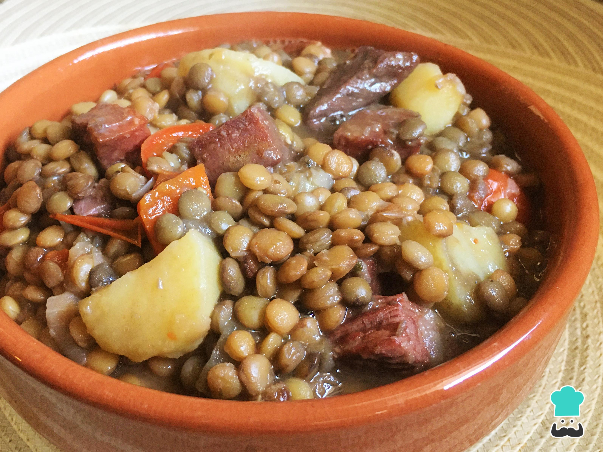
Guiso de lentejas
Esta receta, además de ser rica en nutrientes como el hierro y proteínas, es un plato típico consumido en las épocas de frío en toda la Argentina, especialmente en fechas patrias como el 25 de mayo. Es muy simple de preparar y sumamente deliciosa. La panceta es casi un ingrediente obligado, pero los ingredientes se pueden elegir a gusto de los integrantes del hogar: con chorizo colorado, carne de ternera, entre otras carnes.